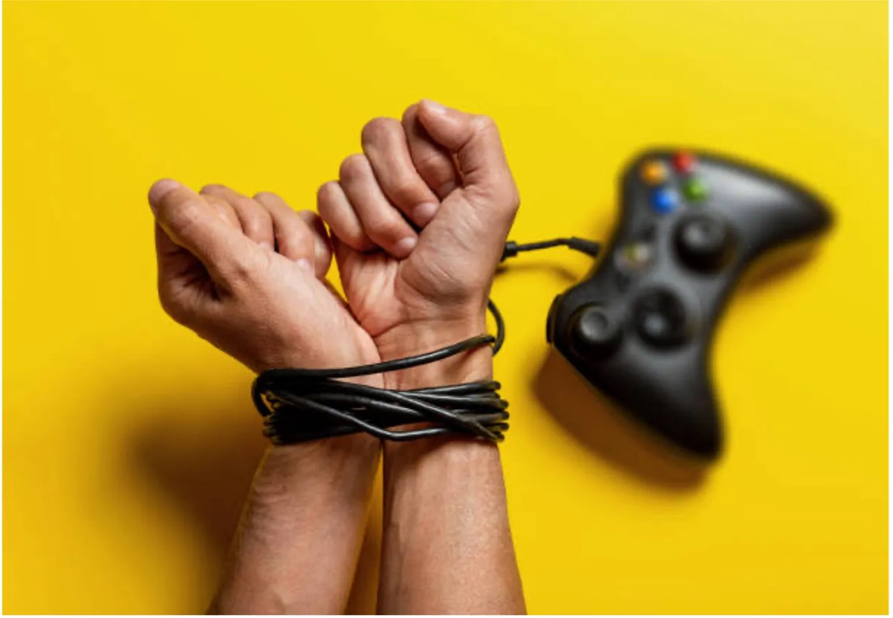
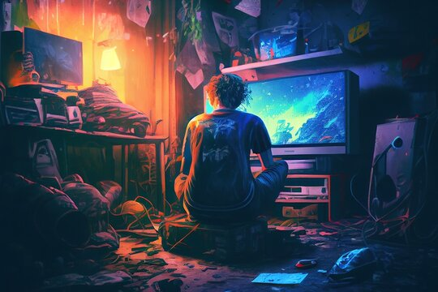

| | |
| Echte gameverslavingen zijn erg zeldzaam, minder dan 1% van jongeren is echt gameverslaafd. Wel is ongeveer 5% van de jongeren bezig me “problematisch” gamen, wat inhoud dat ze gamen een hogere prioriteit geven dan meest andere dingen. |
 |
| Er is pas echt te spreken van “problematisch” gamen bij de volgende dingen: • Het is erg moeilijk om te stoppen met gamen. • Langer of meer spelen dan het idee was. • Slaaptekort oplopen door gamen. • Conflicten krijgen met anderen over gamen. • Mentaal veel bezig zijn met gamen. • Games gebruiken om negatieve gevoelens te ontvluchten. • Financiële problemen krijgen door (in-)gameaankopen. • Andere activiteiten verwaarlozen. |
|
 |
|
“Problematisch” gamen is vaak te paren met psychologische/sociale problemen. “Problematisch” gamen hangt vaak samen met slechte schoolprestaties en depressieve/negatieve gevoelens, maar ook een gevoel van eenzaamheid of een negatief zelfbeeld. Je weet dan niet of het door het gamen komt of dat het gamen door het komt. Niet alle kinderen lopen evenveel kans op het ontwikkelen van “problematisch” gamegedrag. Soms willen jongeren online vrienden hebben omdat ze in het echt gepest worden, of omdat ze online wel gewaardeerd worden voor hun talent. Ook kan het zijn dat jongeren mentale stoornissen hebben waardoor de online wereld een soort veilige plek voor hen is |
Bronnen: